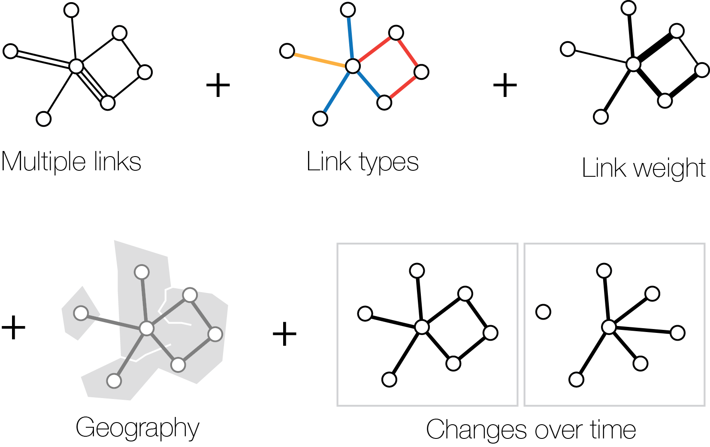

What is the Vistorian?
The Vistorian is an online platform that provides interactive visualization for various kinds of networks:

Enter your data once, and explore it using various visualizations.
Contribute
The Vistorian and the underlying library are open source.
For getting involved, visit
http://github.com/networkcube/networkcube and
e-mail us. There is much to do and we are open to any improvements and new features.
Current and past contributors
- Benjamin Bach, Microsoft Research-Inria Joint Center
- Jean-Daniel Fekete, Inria
- Nicole Dufournaud
- Nathalie Henry Riche
- Paola Llerena Valdivia, Inria
- Emmanouil Giannisakis, Inria
Related Projects
Visualize your data
Your data must be formatted in table format in .CSV. Learn more about preparing your data
here.
Your data is not actually uploaded to any of our servers, but remains private on your very
own browser and is not transmitted over the internet. Deleting the browser cache, deletes your data.
The following link creates a new session, or resumes your last session. Then you can "upload" data.
Start or continue session
Citation
Benjamin Bach, Nathalie Henry Riche, Roland Fernandez, Emmanoulis Giannisakis, Bongshin Lee, et al.. NetworkCube: Bringing Dynamic Network Visualizations to Domain Scientists. Posters of the Conference on Information Visualization (InfoVis), Oct 2015, Chicago, United States. 2015.
@misc{bach:hal-01205822,
TITLE = {{NetworkCube: Bringing Dynamic Network Visualizations
to Domain Scientists}},
AUTHOR = {Bach, Benjamin and
Henry Riche, Nathalie and
Fernandez , Roland and
Giannisakis, Emmanoulis and
Lee, Bongshin and
Fekete, Jean-Daniel},
URL = {https://hal.inria.fr/hal-01205822},
NOTE = {Poster},
HOWPUBLISHED = {{Posters of the Conference on Information
Visualization (InfoVis)}},
YEAR = {2015},
MONTH = Oct,
KEYWORDS = {information visualization ; networks ;
social networks ; brain connectivity},
}
Read the paper
Project History
On October 14th, 2014, Nicole Dufournaud, associate member of LaDéHis—EHSS and Bernard Michon, CRHIA-Université
de Nantes presented a talk entitled "L’analyse des réseaux, une aide à penser : réflexions sur les stratégies
économique et sociale de Marie Boucher, marchande à Nantes au XVIIe siècle" ("Network analysis, a Thinking
Aid: Reflections on the Economic and Social Strategies of Marie Bucher, a 17th century Marchand from
Nantes."). The talk was presented at the conference "Femmes et réseaux dans les sociétés modernes et
contemporaines. Réalités et représentations" ("Women and Networks in Modern and Contemporary Societies")
at the CEMMC (Centre d'Etudes des mondes modernes et contemporains) at the University Université Michel
de Montaigne - Bordeaux 3.
This talk resulted from a collaboration between Benjamin Bach (Microsoft Research — Inria Joint Center) and
Pascal Cristofoli (LaDéHis CRH-EHESS). Based on this collaboration, the idea for the Vistorian was born.
Bibliography
This section lists literature in the field of network visualization and its application in the social sciences
- Robust Actin and the Rise of the Medici, 1400-1434, Ansell Christopher K., Padgett John F (1993), American Journal of Sociology
- Connections, Changes, and Cubes: Unfolding Dynamic Networks for Visual Exploration, Bach Benjamin (2014), Ph.D Thesis, Université Paris Sud
- Visualizing Dynamic Networks with Matrix Cubes, Bach Benjamin, Pietriega Emmanuel, Fekete Jean-Daniel (2014), Conference on Human Factors in Computing Systems (CHI)
- Les réseaux dans le temps et dans l'espace, Beauguitte Laurent (null), http://groupefmr.hypotheses.org/2890
- Introduction : où en est l'analyse de réseaux en histoire?, Bertrand Michel, Guzzi-Heeb Sandro, Lemercier Claire (2011), REDES- Revista hispana para el análisis de redes sociales
- La vie en réseau. Dynamique des relations sociales, Bidart Claire, Degenne Alain et Grossetti Michel (2011), null
- Des catégories aux liens individuels : l?analyse statistique de l?espace social, Blum Alain, Gribaudi Maurizio (1990), Annales Économies, Sociétés, Civilisations
- Multiple Networks and Mobilization in the Paris Commune, 1871, Gould R. V. (1991), American Sociological Review,
- Social stratification and Complex Systems : a model for the analysis of relational data, Gribaudi Maurizio, Mogoutov A. (1993), The use of occupations in Historical Analysis
- Exposure, Networks, and Mobilization: The Petition Movement during the 1848/49 Revolution in a German Town, Krempel L. & Schnegg M. (1999), null
- Analyse de réseaux et histoire, Lemercier Claire (2005), RHMC
- Petitions and the Social Context of Political Mobilization in the Revolution of 1848/49: A Microhistorical Actor-Centred Network Analysis, Lipp C. & Krempel L. (2001), International Review of Social History
- A Network Analysis Approach of the Venetian Incanto System, Rochat Yannick, Fournier Mélanie, Mazzei Andrea et Kaplan Frédéric (2014), http://dharchive.org/paper/DH2014/Paper-424.xml


 Visualizations
Visualizations Full Demo
Full Demo Contact
Contact